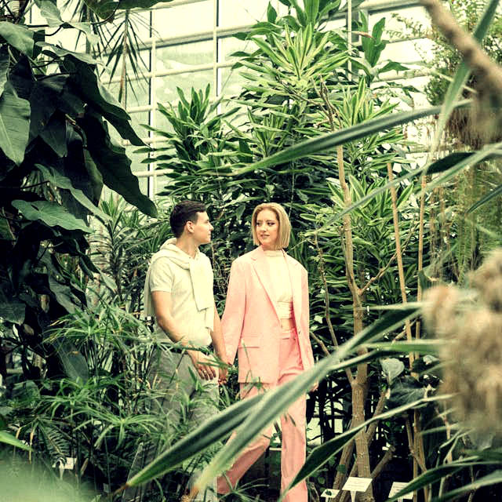
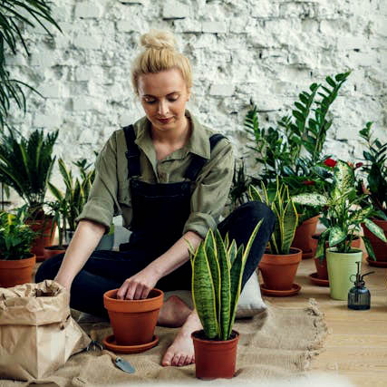

Welcome to Sprout & Grow, where green meets greatness! Dive into our sanctuary of sustainable growth, where the care put into every plant tells a tale of integrity and environmental stewardship. We're your partners in cultivating a greener tomorrow empowering you to nurture thriving gardens. Let's sow the seeds of sustainability together.
What can we offer?
Garden Consultations: Receive tailored advice and recommendations from our experienced horticulturists to create your dream garden oasis. Whether you're a novice or seasoned gardener, our personalized consultations will help you achieve gardening success.

Greenhouse Tours: Immerse yourself in the beauty of our greenhouse sanctuary with guided tours led by our knowledgeable staff. Learn about our sustainable growing practices, discover rare plant species, and gain insight into the inner workings of our organic nursery.Seed Exchange Program: Join our community-driven seed exchange program to swap seeds, share gardening tips, and connect with fellow enthusiasts. Access a diverse selection of heirloom and open-pollinated seeds while contributing to seed diversity and preservation efforts.

Gardening Club: Join our exclusive gardening club for access to monthly workshops, discounts on plants and supplies, and insider tips from our experts. Connect with like-minded individuals, expand your gardening knowledge, and embark on a journey of green exploration together.